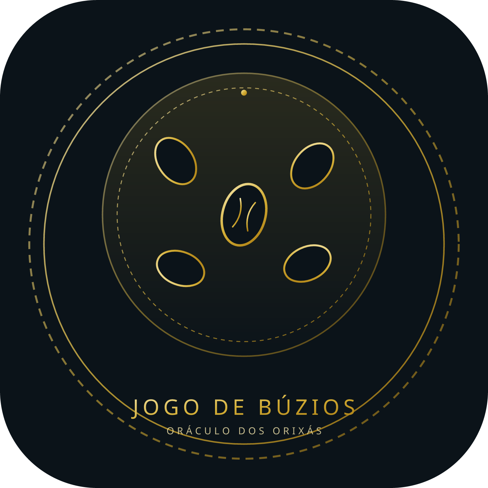

JOGO DE BÚZIOS
de confirmação · dos orixás e dos odus
Um jogo sagrado que revela, confirma e direciona seu caminho com clareza e proteção espiritual.
O Sagrado Oráculo
O Jogo de Búzios é um oráculo tradicional sagrado de consulta direta aos Orixás e aos Odus. Através dele, identificam-se as influências espirituais, caminhos abertos, bloqueios e soluções práticas para a sua vida cotidiana e espiritual.
Confirmação dos Orixás
Descubra e confirme os orixás que regem seu destino e sustentam sua caminhada terrena.
Confirmação dos Odus
Revele os odus que orientam suas escolhas, seus desafios e o seu verdadeiro propósito de alma.
Orientação Espiritual
Receba direcionamentos claros para viver em pleno equilíbrio, clareza e axé.
Jogo sagrado, realizado com respeito, ética e responsabilidade.
"Escute. Confie. Receba."